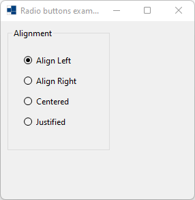
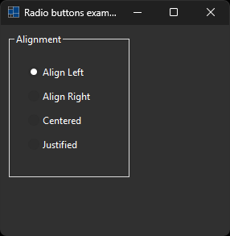
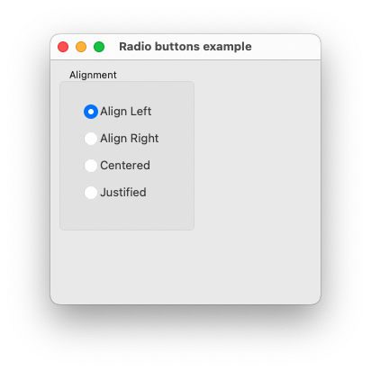
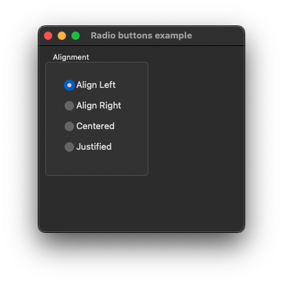
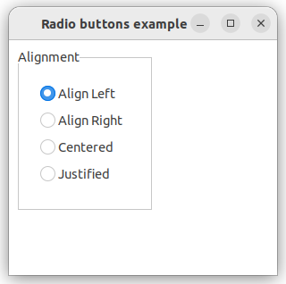
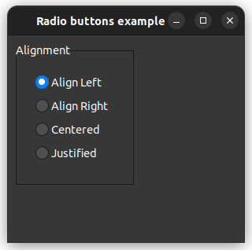

|
xtd
0.2.0
|
Loading...
Searching...
No Matches
radio_buttons.cpp
demonstrates the use of xtd::forms::radio_buttons radio_button object collection.
- Windows
- 

- macOS
- 

- Gnome
- 

#include <xtd/drawing/texts>
#include <xtd/forms/application>
#include <xtd/forms/form>
#include <xtd/forms/group_box>
#include <xtd/forms/radio_buttons>
using namespace xtd::forms;
auto main() -> int {
auto group_box_alignment = group_box::create(form_main, xtd::drawing::texts::alignment(), {10, 10}, {150, 180});
application::run(form_main);
}
static xtd::string alignment()
Gets a system-defined text that has a string value of "Alignment". This field is constant.
static void run()
Begins running a standard application message loop on the current thread, without a form.
static radio_button justified()
Create a system-defined radio_button that represent justified radio_button.
static radio_button align_right()
Create a system-defined radio_button that represent align_right radio_button.
static radio_button align_left()
Create a system-defined radio_button that represent align_left radio_button.
static radio_button centered()
Create a system-defined radio_button that represent centered radio_button.
The xtd::forms namespace contains classes for creating Windows-based applications that take full adva...
Definition texts.hpp:219
Generated on Wed Jun 18 2025 12:19:37 for xtd by Gammasoft. All rights reserved.